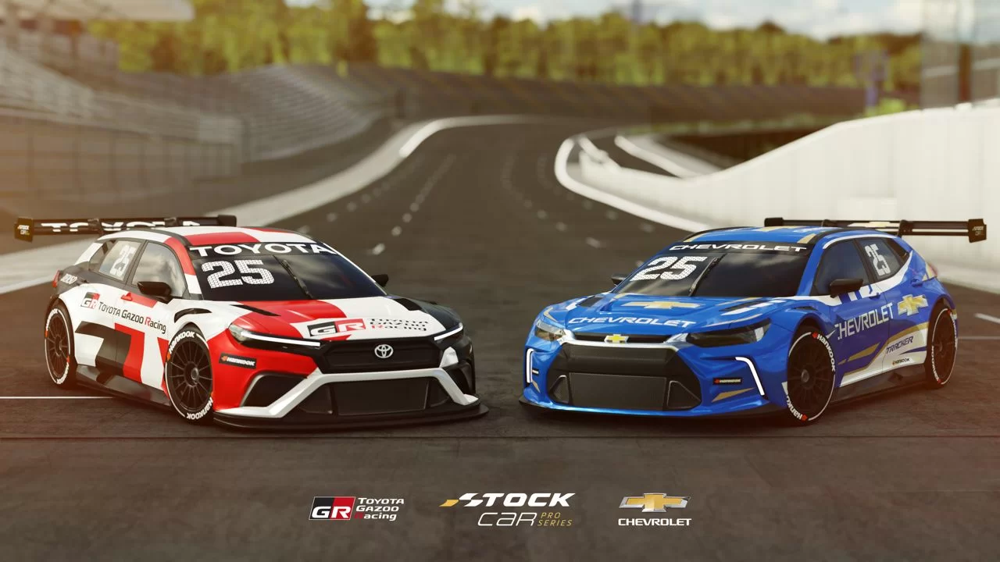

Últimas notícias da Stock Car
A Stock Car Pro Series abriu sua temporada 2026 com grandes novidades técnicas e um grid renovado. A principal notícia é o retorno dos motores V8 aspirados, substituindo os motores turbo utilizados no ano passado, visando maior confiabilidade e o "ronco" clássico que os fãs adoram.
Resultados da 1ª Etapa (Curvelo - MG)
A abertura aconteceu no Circuito dos Cristais entre os dias 7 e 8 de março:
Corrida Principal: O atual campeão Felipe Fraga venceu após a quebra de Gaetano Di Mauro. Julio Campos e Gabriel Casagrande completaram o pódio.
Corrida Sprint: Enzo Elias dominou e garantiu a vitória no sábado.
Liderança do Campeonato: Felipe Fraga saiu de Minas Gerais na ponta da tabela com 122 pontos, seguido por Rubens Barrichello (109) e Gabriel Casagrande (107).
Próximas Etapas
O calendário de 2026 conta com 12 etapas. A próxima parada é no Paraná:
29 de março: Santa Cruz do Sul (RS) ou Cascavel (PR).
26 de abril: Interlagos (SP).
Destaques do ano: O retorno da Corrida do Milhão (27 de setembro, em Brasília) e a inédita prova de Endurance de 3 horas (18 de outubro, em Goiânia).
Nota: Há uma pequena variação nos anúncios recentes sobre o local da 2ª etapa entre Santa Cruz e Cascavel; vale conferir a confirmação oficial da Vicar nos próximos dias.
Data da postagem: 20/03/2026 as 00:01h